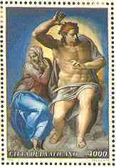
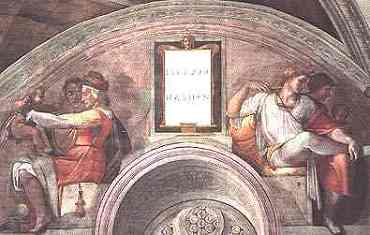
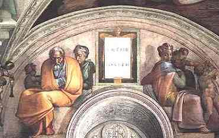
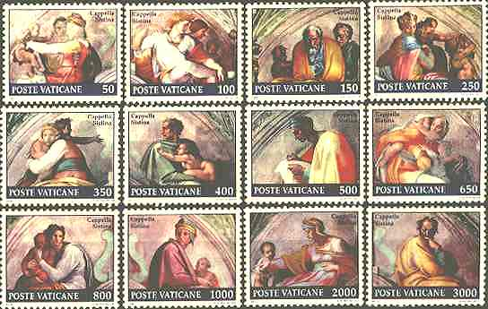

The Sixtine Chapel by Michelangelo Buonarotti

 |
Michelangelo
Buonarotti (1475-1564). Italian
Renaissance |
 |
VATICAN, 1991. LUNETTES OF CHRIST
Lunette of Eleasar: part of the cycle on the genealogy of Christ according to St. Matthew. It is the first of the frescoes painted by Michelangelo during the period 1508-1510 and the first one that was cleaned.
 |
 |
Lunette of Jacob: chronologically the last two or Christ's forefathers. The frowning old man on the left is Jacob, father of Joseph who was Christ's putative father.

Lunette of Asa (shown on the stamps above): located in the second half of the Sixtine Chapel, it was painted in the years 1511-1512, after the interruption caused by the departure of Pope Julius II. (After the stamps booklet).
Tip: Please
point the stamps with the mouse in order to get more information about them
and about the works of art displayed.
Related link:
Michelangelo, WebMuseum
Background: Madonna of the Stairs, the first sculpture of Michelangelo.